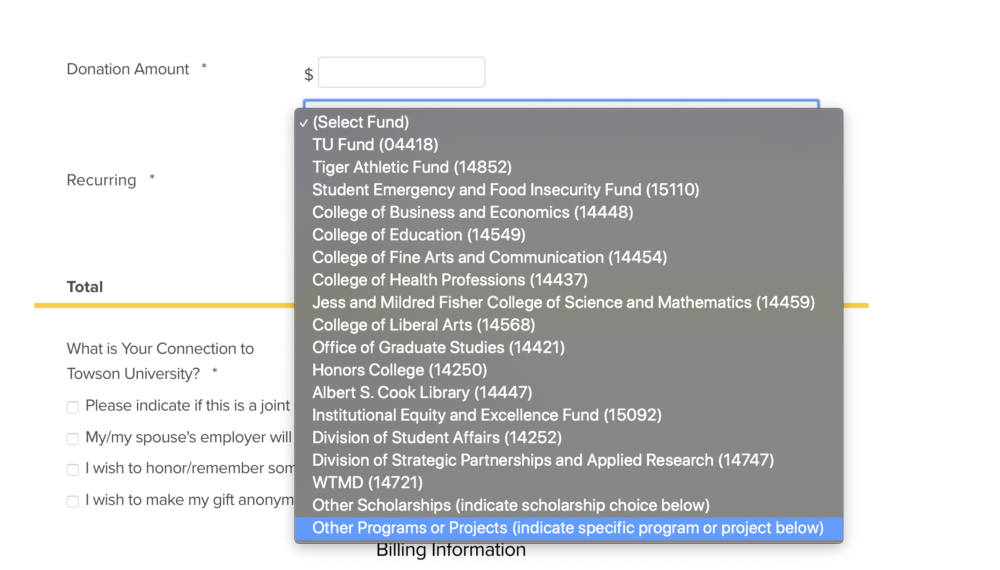
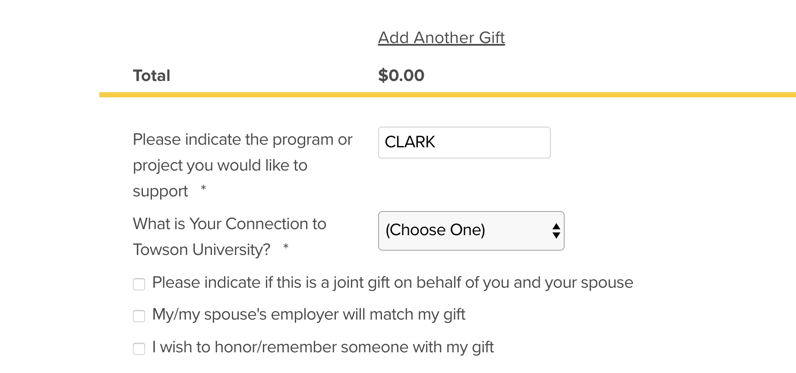

CLARK is a digital library that hosts a diverse collection of free cybersecurity Learning Objects. In order to maintain our system and continue to provide our Learning Objects at no cost we need your help.
Navigate to the TUFoundation page
Enter donation amount and select Other Programs or Projects (indicate specific program or project below) when selecting a Fund
Enter CLARK as the Program or Project you would like to support
